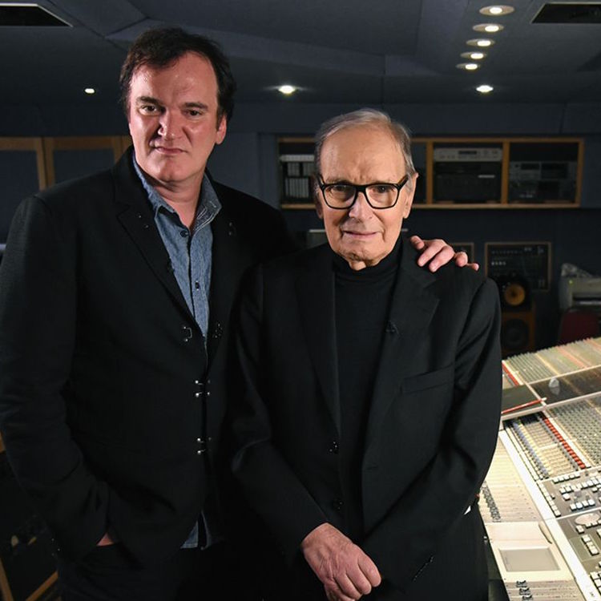

Who am I?
Personal Details
- Name: Ernests Kečko
- Date of birth: 8th of February, 1984
- Nationality: Latvian
- Location: Riga, Latvia
- Phone: +371 28353753
- Email: ernests.kecko@gmail.com
Profesional Profile
I am an experienced web-based developer with experience more than 10 years. I am focused on result, meeting deadlines and keeping important things in right order. I am passionate about making stuff work without a glitch, look appealing and user friendly. I like to keep things clear and organized so that there's a distinct plan and minimum ambiguity.
My motto is Divide et impera (latin for Divide and conquer) - if some problem is too big to grasp, it should be divided in to smaller chunks and dealt with one at a time.
My Professional Background
Work Experience
2016May-Present
Ask.fm
Software Engineer
Job Description
- Developing and maintaining front-end for Top 10 social network platforms in the world - Ask.fm (Ruby on Rails, HTML, SCSS, Javascript).
- Front-end & back-end development of supporting sites - various content moderation apps (Ruby on Rails, HTML, SCSS, Javascript, Redis) and multi language information sites (PHP/Wordpress, SCSS, node.js).
2012November-2016May
Tieto
Technical consultant
Job Description
- Full stack web development with Ruby on Rails, Javascript and more.
- Customer requirements analysis and creation of system architecture.
- Unit test developement and continuous integration maintenance in the projects.
- Ruby on Rails framework integration with other systems.
- Documentation and consulting regarding developed projects.
2011March-2012November
Cube
Web developer
Job Description
- Full stack web-based development on Leaf (Cube developed PHP/MySQL/Javascript CMS).
- Creation of web applications for social networks (Facebook, Draugiem.lv).
- Managing project cost estimations based on technical requirements and wireframes/designs.
- Consulting on web development and hosting issues.
- Mailchimp and Mailigen account managing.
- Google Analytics account managing.
2006April-2011March
Itviss
Project manager, programmer
Job Description
- Full stack web-based development with PHP/MySQL/Javascript.
- Website development using Wordpress, XOOPS, Drupal.
- Managing project cost estimations based on technical requirements and wireframes/designs.
- Project management - meetings with clients, contract negotiations.
- Consulting on web development and hosting issues.
- Creating product documentation.
- Hosting account administration.
- Google Analytics account managing.
- Content administration.
2002May-2010February
Jānis Roze
2004 - 2010 Programmer (half-time)
2002 - 2004 Information manager (half-time)
Job Description
Programmer
Maintenance of developed software which summarizes, analyzes & verifies cash register data as well as generates automatic financial reports.
- Development of cash register data summary in Excel (using Visual Basic for Applications).
- Additional programming and support of developed code.
Information manager
Accounting in charge of cash register data, consulting and problem solution, financial reports and statistics.
- Cash register data maintenance and monitoring.
- Cash register issue handling.
- Sales information analyzing and verifying according to law.
- Financial data input into accounting system.
- Cash register data maintenance.
- Financial inspection on location.
My Work
Latest projects
2016-Present
Ask.fm Web
Project Description
One of the most popular social networks in the world. Web front-end is running on Ruby on Rails, which communicates to Java middleware via REST API.
Features:- Ability to maintain your profile, ask and answer questions anonymousky or publicly and receive 'likes' from other users.
- Customizable color theme, emoodji, avatar.
- Ability to 'follow' & 'star' various users and receive notification about their activity.
- Developing brand new feature 'Photo polls' which enables users to upload two images and start a poll, where users can vote on either of the two images.
- Encouraging to involve in activities by creating null states for newly registered users.
- Upgrade & refactor error messages for signup, login, password recovery so that they contain more meaningful explanation and increase registration rate.
- Feed improvements - shortening rich media content answers into previews by parsing HTML content and making sure user can see more answers.
- Improve mechanism for managing regular and seasonal emoodjis on user profile.
- Redesign & improve user profile page by distinguishing profile fields and adding profile gallery.
- Introduce 'Discovery feed' (most popular content in current user's language & geography) and make it a default page for defined segment of users.
- Active participation in migrating to new data center.
- Maintenance – bugfixes for wide range of devices, operating systems and browsers, refactorings.
- Ruby on Rails
- HTML
- SCSS
- Javascript
- jQuery
- Redis
2016-Present
Ask.fm Moderation App
Project Description
Ruby on Rails app that is used by content moderators to monitor inappropriate user content.
Features:- Search for users and their content to validate 'red flags' given by automatic vocabulary checker.
- User administration, suspension, banning.
- Promoted answer & daily question administration.
- Added support for 'Photo polls' entity - ability to view, search & destroy.
- Performance upgrade for media lookup - search for user content based on image url attached to it.
- Active participation in migrating to new data center.
- Maintenance – bugfixes & refactorings.
- Ruby on Rails
- HTML
- SCSS
- Javascript
- jQuery
- MySQL
2015-2016
Tieto TopBar
Project Description
Customizable Ruby on Rails application snippet, which is driven by Javascript - it could be included in any internal application to get access to tools as well as internal search and latest Tibbr notifications. It takes form of a navigation bar with dropdown submenus.
Features:- Ability to select favorite tools and toolsets (based on employee role).
- Customizable color scheme and position (fixed to top vs floating).
- Implementation of Amazon mega menu with ability to activate on click.
- Preference for user to select menu activation method – click or hover.
- Responsive single page application layout for non-desktop devices made with Bootstrap and jQuery, as well as CSS3 transitions between slides.
- Display user instruction and support links based on host.
- jQuery Alphascroll plugin implementation for easier navigation in tool list.
- Ability to ask question from support tab that will be posted on Tibbr as a post with option to set multiple subjects.
- Unit test suite in RSpec & major code refactoring.
- Search upgrade so that it provides suggestions based on typed query.
- Maintenance – bugfixes, consultation regarding usage.
- Ruby on Rails
- HTML
- LESS
- Bootstrap
- Javascript
- CoffeeScript
- BackboneJS
- jQuery
- MySQL
- RSpec
2015-2016
Tieto Newsfeed
Project Description
Tieto intranet homepage with most important information for employee consisting of mutliple service endpoints such as latest news, service alerts, Twitter feed, opened tasks, Tibbr (internal social network) My Wall etc. It also acts as a Tibbr's front page.
Accomplishments- "Subject plugin" – ability to insert post list from specified Tibbr subject in any internal web-page via Javascript include. Ability to like and reply to posts and comments.
- Development of multiple widgets - "Twitter feed", "Perspectives blog", "Open Jobs" carousel and others.
- Introduced ability for browser to "remember" widget state (collapsed or expanded).
- Overhaul of admin panel to use the same bootstrap version as frontend.
- Visual facelift in order to support retina screens.
- Ruby on Rails
- HTML
- SASS
- Bootstrap
- Javascript
- CoffeeScript
- AngularJS
- MySQL
- RSpec
2014-2016
Tieto Vocabulary
Project Description
Glossary for Tieto internal terms and abbreviations made in a single page application fashion, where user can search, edit and propose widely used terms inside Tieto workspace, connect related terms or add translations, arrange terms in a tree-like hierarchy.
Accomplishments- Substantial layout and functional changes via BackboneJS.
- Multiple visual fixes before releasing project to production.
- Changed term XML export according to API requirements in order to synchronize with another database.
- Maintenance – bugfixes, consultation regarding usage as well as occasional improvements.
- Ruby on Rails
- HTML
- SASS
- Bootstrap
- Javascript
- BackboneJS
- CoffeeScript
- jQuery
- SolR
- Postgres
- RSpec
2014-2016
Tieto Survey Tool
Project Description
Internal tool for managing customer satisfaction or any other surveys.
Features:- Ability to create questionnaires with different question types - single choice, multi choice, text.
- Manage user access on department basis.
- Export results to Excel
- Maintenance – bugfixes, consultation regarding usage and improvement and occasional development work.
- Upgrade Excel export feature - use "axlsx" gem for generation.
- Ruby on Rails
- HTML
- SASS
- Javascript
- CoffeeScript
- jQuery
- Oracle
- RSpec
2012-2014
Tieto CRM Data
Project Description
CRM Data is powerful Ruby on Rails web application on top of Oracle eBS, and provides much better user experience comparing to Oracle eBS (TERP) CRM and Sales modules. It has a lot of custom features comparing to eBS standard modules, although these systems are tightly tailored – CRM Data still uses a lot of standard setup and background processes of eBS.
CRM Data is used to:- Review and request updates to your customer data.
- Manage your customer contact information.
- Enter and maintain sales signals & opportunity data with sophisticated workflow.
- Create showcases of won opportunities.
- Manage meetings, tasks and marketing events, synchronize with MS Outlook.
- Manage customer experience survey data.
- Perform role and access administration.
- Architecting CRM Data sales signal integration with Marketo platform - consulting on CRM Data sales signal model structure, validations, mapping corresponding fields from Marketo to CRM Data, developing Marketo data ouput in CRM Data.
- Opportunity section integration with Salesforce proof of concept project - consulting, creation of broad documentation regarding opportunity model workflow.
- Showcases section maintenance and development.
- Customer quality pulse and Delivery quality pulse section maintenance and development.
- Extensive amount of SQL scripts to extract data from database regarding specific requirements.
- Visual facelift and upgrade for whole project.
- Ruby on Rails
- HTML
- CSS
- Javascript
- jQuery
- Oracle
- SolR
- RSpec
- Cucumber
- Jasmine
2012
Tieto Employee Radiator
Project Description
Display dynamic information regarding Ruby Team on monitor in office. This includes birthdays, namedays, weather forecast, webcamera stream from office building's cafeteria, corporate system alerts, feed from National Vulnerability Database, team member messages sent from email. Project also helps organizing Tieto Ruby project & tool administration.
Technologies- Ruby on Rails
- HTML
- LESS
- Javascript
- jQuery
- MySQL
- Bootstrap
- RSpec
- Cucumber
My Education
Education
2002September-2005June
Riga Technical Univerity
Description
Bachelor of engineering science in computer control and computer science. Main field of study for the qualification is automation and computer engineering.
Bachelor thesis - PHP Portal Development with Content Management System XOOPS.
What I’m best at
Skills & Knowledge
Language Skills
Native
Experienced
Advanced
Knowledge
- HTML
- CSS
- LESS
- SASS
- Bootstrap
- PHP
- MySQL
- Javascript
- CoffeeScript
- jQuery
- ExtJS
- Backbone
- Ruby on Rails
- GIT
- Wordpress
- Xoops
- Cake PHP
- Photoshop
- Pascal
- Oracle
- Cucumber
- RSpec
- Agile Methodologies
- Google Analythics & SEO
Hobbies & Interests
Movies
Music
Foosball
Soundtracks
Travelling
Snowboarding